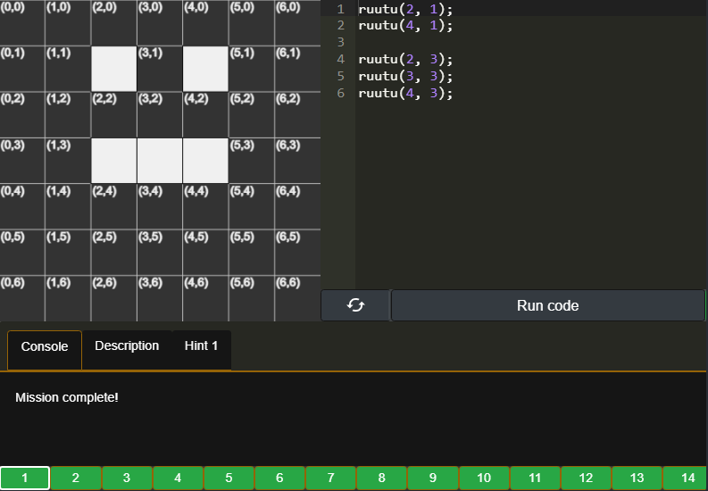
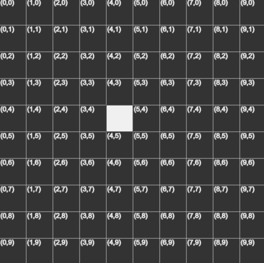
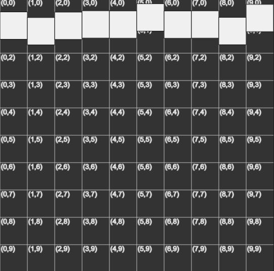
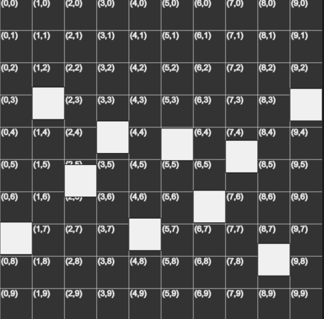
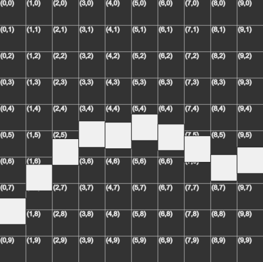
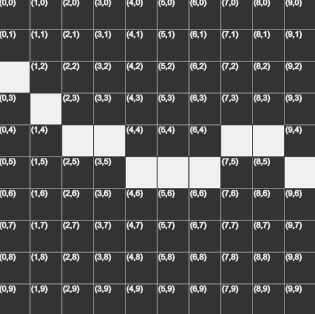
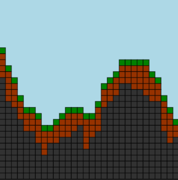
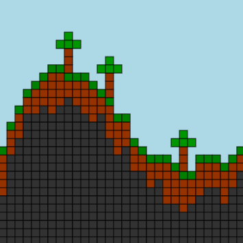
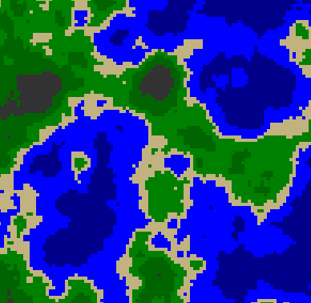
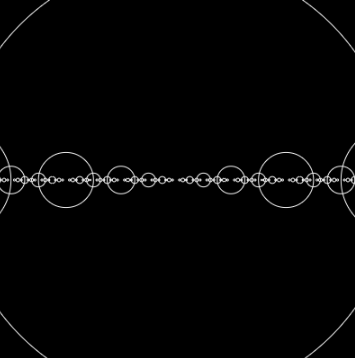

Johdatus noise-funktioihin (ja satunnaiseen maastogeneraatioon)
By Arttu Mäkinen
Sisällysluettelo
Johdatus noise-funktioihin (ja satunnaiseen maastogeneraatioon)Sisällysluetteloigno.cc/loops1D-noisePohjaAloitetaan pisteelläTerrariaSaari-maastogeneraatioYmpyräfraktaalit
igno.cc/loops

Jos aikaisempaa kokemusta for-silmukoista ei ole, kannattaa käydä tekemässä igno.cc/loops haaste jossa käydään läpi 2D-taulukon modifioimista for-silmukoilla
1D-noise

Koodataan Hill Climb Racing -tyylinen maastogeneraatiosysteemi editor.p5js.org ympäristössä
Jos arvostaa silmiään kannattaa vaihtaa Dark Theme:en painamalla oikeassa yläkulmassa olevaa asetus/hammasratasikonia ja valitsemalla Dark tai High Contrast. Ympäristöön kirjautuminen kannattaa ettei menetä koodejaan selaimen kaatuessa etc
Pohja
Uuden projektin kuuluisi näyttää tältä:
xxxxxxxxxxfunction setup() { createCanvas(400, 400);}function draw() { background(220);}setup() funktion aaltosulkujen sisäinen koodi suoritetaan kerran ohjelman alkaessa.
createCanvas(width, height) tekee uuden kuvan (tässä tapauksessa 400 pikseliä korkean ja leveän) jolle voimme jatkossa piirtää P5:n piirtofunktioilla
draw() functio suoritetaan jokaisella framella / ruudunpäivityksellä
background() piirtää taustan. Jos sille annetaan argumenttina yksi luku 0-255 välillä se piirtää väriksi mustan (0) , valkoisen (255) tai jonkun harmaan sävyn niiden välillä (0-255). arvoksi voi antaa myös RGB (red, green, blue) arvon jolloin esim background(255,0,0) piirtäisi punaisen taustan. Arvon voi antaa myös tekstinä background('red')
Aloitetaan pisteellä
Aloitetaan piirtämällä piste:
xxxxxxxxxxfunction draw() { background(220); point(5,5) // <--}
Todetaan että sitä ei meinaa nähdä joten lisätään pisteen (ääriviivan eli stroken) kokoa:
xxxxxxxxxxfunction draw() { background(220); strokeWeight(5) // <-- point(5,5)}
Lisätään x ja y muuttujat joiden perusteella piste sijoitetaan. Kokeillaan liikutella pistettä manuaalisesti arvoja muuttamalla.
xxxxxxxxxxfunction draw() { background(220); strokeWeight(5) var x = 200; // <-- var y = 200; // <-- point(x,y)}
Piirretään horisontaali viiva while-silmukalla:
xxxxxxxxxx var x = 0; var y = 200; while (x < 400) { point(x,y) // <-- x += 1 }
Muutetaan while-silmukka for-silmukaksi. Painota että for-silmukka ainoastaan lyhenne/shorthand äsken kirjoitetulle while-silmukalle ja mikään ei oikeasti muutu:
xxxxxxxxxx var y = 200; for(var x = 0; x < 400; x += 1) { point(x,y) }
Tässä vaiheessa kannattaa ehkä korvata arvo 400 width-muuttujalla:
xxxxxxxxxx var y = 200; for(var x = 0; x < width; x += 1) { point(x,y) }
Siirtään muuttujan y määrittely for silmukan sisälle. Kokeilu havainnollistamisen vuoksi y:n arvoja x, 2x, -x tai vaikkapa 200 + sin(x*0.05) * 100 (<= tai .. * x):
xxxxxxxxxx for(var x = 0; x < width; x += 1) { var y = x; // <-- point(x,y) }
Kokeile käyttää noise-funktiota. Huomaat että ruudun ylhäälle ilmestyy suttua. Tämä johtuu siitä että noise()-funktio palauttaa aina luvun välillä 0-1 eli y-koodrinaatit saavat arvoiksi 0-1
xxxxxxxxxx var y = noise(x) // <-- point(x,y)
Kokeile kertoa lauseke jollain luvulla (0 - height) ja huomaat että pisteet jakautuvat eri korkeuksille melko kaaoottisesti. Aseta lopulta kertoimeksi height
xxxxxxxxxx var y = noise(x) * height // <-- point(x,y)
Jaa noise-funktion argumentti eri luvuilla ja katso mitä tapahtuu. Aloita vaikka pienestä jakajasta 10 => 20 => 50 => 100
xxxxxxxxxx var y = noise(x/20)*height // <-- point(x,y)Lopulta visualisoi tätä hiiren x koordinaatilla noise(x/mouseX) ja liikuttele hiirtä vasemmalle ja oikealle ruudun päällä. Itse jätän luvun lopulta kuitenkin arvoon 200
xxxxxxxxxxfunction setup() { createCanvas(400, 400);}function draw() { background(220); strokeWeight(2) for(var x = 0; x < width; x += 1) { var y = noise(x/200)*height point(x,y) }}^ Nyt koodin pitäisi näyttää tältä. Jos painat Play-symbolia useasti suorittaaksesi ohjelman, huomaat että maasto on joka kerralla erilainen. Tämä johtuu siitä että noise-algoritmi arpoo joka suorituksella uuden seedin, joka perusteella maailma generoidaan. Tämä termi voi olla tuttu esimerkiksi Minecraftista, jossa saman seedin kirjoittamalla maailmanluonnissa saa aina samanlaisen maailman
Kokeillaan seuraavaksi miten voisimme valita seedin omaan maailmaamme:
xxxxxxxxxxfunction setup() { noiseSeed(123) // <-- createCanvas(400, 400);}
Nyt joka suorituksella meille generoituu samanlainen vuoristo. Kokeile vaihtaa numeroita.
xxxxxxxxxxvar x_alku = 0; // <---function setup() {}function draw() { background(220) strokeWeight(2) for(var x = 0; x < width; x += 1) { var y = noise(x_alku + x/200)*height // <--- point(x,y) }}Koitetaan saada maasto liikumaan eteenpäin kuten Hill Climb Racing:issa. Tehdään muuttuja x_alku joka kuvastaa vasemman reunan x-koordinaattia.
- Alusta muuttuja ensimmäisellä rivillä
var x_alku = 0 - Sijoita se noise-funktion argumenttiin, jotta se vaikuttaa johonkin
noise(x_alku + x/200) - Kokeile kasvattaa muuttujan arvoa vaikka
0.2kerrallaan. Elivar alku = 0.0, sitten0.2=>0.4=>0.6=>0.8=>1.0. Huomaat että maasto siirtyy eteenpäin vähän kerrallaan.
Vuoriston liikutteleminen käsin on työkästä. Lisätään x_alku += 0.1 jotta maasto lähtee liikkumaan automaattisesti. Arvos kasvattamalla saa vuoriston liikkumaan hitaammin tai nopeammin:
xxxxxxxxxx x_alku += 0.01 // <-- for(var x = 0; x < width; x += 1) { var y = noise(x_alku + x/200)*height point(x,y) }
Vaihdetaan point(x,y)-funktio line(x1,y1, x2,y2)-funktioksi jolloin vuoren korkeudelta piirretään pystysuora viiva ruudun alareunaan. Nyt meille piirtyy jo kunnollinen vuoristo!
xxxxxxxxxx for(var x = 0; x < width; x += 1) { var y = noise(x_alku + x/200)*height line(x,y, x,height) // <--- }Lisätään värit. Muista että stroke() ja background()-funktiot toimivat RGB-arvojen lisäksi myös värien nimillä stroke('blue') ja heksaluvuilla stroke('99F2FF')
xxxxxxxxxxvar x_alku = 0;function setup() { noiseSeed(123) createCanvas(400, 400);}function draw() { background('lightblue') // <-- Taivas/tausta strokeWeight(2) x_alku += 0.01 for(var x = 0; x < width; x += 1) { var y = noise(x_alku + x/200)*height stroke('brown') // <-- Maa line(x,y, x, height) }}
xxxxxxxxxxfunction draw() { background('lightblue') strokeWeight(2) x_alku += 0.01 for(var x = 0; x < width; x += 1) { var y = noise(x_alku + x/200)*height stroke('brown') line(x,y, x, height) if (y > 200) { // Veden raja stroke('blue') line(x,y, x, 200) } if (y < 100) { // Lumihuippujen raja stroke('white') line(x,y, x, 100) } }}Lisätään vielä järvet ja lumihuiput vuorille!
Eli jos y on isompi (alempana) kuin veden korkeusraja (200) niin piirretään sininen viiva y-korkeuden ja vesiraja-y:n (200) välille line(x,y, x, 200).
Jos y on pienempi (korkeammalla) kuin lumihuippujen raja (100) niin piirretään viiva y-korkeuden ja lumiraja-y:n (100) välille line(x,y, x, 100)
xxxxxxxxxxvar x_alku = 0; function setup() { noiseSeed(123) createCanvas(400, 400);}function draw() { background('lightgreen') // <-- strokeWeight(2) x_alku += 0.01 for(var x = 0; x < width; x += 1) { var y = noise(x_alku + x/200)*height stroke(100, 80, 30) line(x,y, x, height) if (y > 200) { // Veden raja stroke('cyan') // <-- line(x,y, x, 200) } if (y < 100) { // Lumihuippujen raja stroke('lightgray') // <-- line(x,y, x, 100) } }}Valitsin äsken värit nimensä perusteella jotta ne vastaisivat esittämiänsä maaelementtejä. Tämä näytti todella rumalta, joten tässä oma yritykseni tyylitellä maasto
^ Laita hiiri kuvan päälle aktivoidaksesi koodi
Terraria
Tehdään äskinen mutta palikoilla!
Tähän käytetään samaa ruudukkokirjastoa, jota käytettiin igno.cc/loops harjoituksissa.
Tätä varten se on linkattava index.html tiedostoon
xxxxxxxxxx <head> <script src="https://igno.cc/opetus/taulukot/kirjasto.js"></script> ... muut P5-kirjastot ... </head>
Kasvata canvaksen resoluutiota createCanvas(600, 600)
Lisää ruudukkokirjaston ruudukko(10, true) funktio. Ensimmäinen argumentti määrittää ruudukon leveyden ja korkeuden, toinen määrää piirretäänkö ruutujen koordinaatit (taulukoissa ruutuja kutsutaan soluiksi cell ja koordinaatteja indekseiksi index)
xxxxxxxxxxfunction setup() { createCanvas(600, 600);}function draw() { background(220); ruudukko(10, true) // <--}
Piirretään harjoituksen vuoksi ensimmäinen ruutu:
xxxxxxxxxxfunction draw() { background(220); ruudukko(10, true) // <-- ruutu(4,4)}
Lopputuloksen pitäisi näyttää tältä:

Piirretään vaakasuora viiva käytteän ruudukko-kirjaston leveys-muuttujaa joka kertoo ruudukon leveyden ja korkeuden (tällä hetkellä 10):
xxxxxxxxxxfunction draw() { background(220); ruudukko(10, true) var x = 0; while (x < leveys) { ruutu(x, 4); x++; }}
Muutetaan äskinen for-silmukaksi. Taas muistetaan ettei koodin toiminnallisuus muutu mitenkään, for-silmukka on vain lyhenne äskiselle silmukalle:
xxxxxxxxxxfunction draw() { background(220); ruudukko(10, true) for (var x = 0; x < leveys; x += 1) { ruutu(x, 4); }}
Tehdään y-muuttuja ja asetetaan sen arvo noise-funktiolla:
xxxxxxxxxx for (var x = 0; x < leveys; x += 1) { var y = noise(x) ruutu(x, y); }
Ruudut ilmestyvät ruudukon väliin. Tämä johtuu taas siitä että noise() palauttaa desimaalilukuja 0-1:n välillä.
MIKÄÄN järkevä taulukko ei tukisi desimaaleja, mutta tämä on itse koodaamani joten se ei ole järkevä.
Kerrotaan noise(x):n lopputulos leveys-muuttujalla jotta saadaan ruudut leviämään koko ruudukon korkeudelle:
xxxxxxxxxx for (var x = 0; x < leveys; x += 1) { var y = noise(x) * leveys; ruutu(x, y); }
Jaetaan noise(x) eri luvuilla, jotta saadaan vähemmän kaaoottista noise()-maastoa. Itse pidin noise(x/5) lopputuloksesta:
xxxxxxxxxx for (var x = 0; x < leveys; x += 1) { var y = noise(x/5) * leveys; ruutu(x, y); }
Pyöristetään ruutujen kordinaatit alaspäin floor()-funktiolla, jotta saataisiin ruudukko toimimaan järkevästi:
xxxxxxxxxxfor (var x = 0; x < leveys; x += 1) { var y = noise(x/5) * leveys; y = floor(y) ruutu(x, y);}
Värjätään ruudukko vihreäksi:
xxxxxxxxxxfor (var x = 0; x < leveys; x += 1) {var y = noise(x/5) * leveys;y = floor(y)vari("vihrea") // <--ruutu(x, y);Piirretään mutaa(/dirt) maahan saakka:
xxxxxxxxxxfor (var x = 0; x < leveys; x += 1) { var y = noise(x/5) * leveys; y = floor(y) vari("vihrea") ruutu(x,y) for(y = y + 1; y < leveys; y++) { vari("ruskea") ruutu(x, y); }}Lisätään ruudukon kokoa
xxxxxxxxxxfunction draw() { ruudukko(30, true) }..ja poistetaan koordinaatit:
xxxxxxxxxxfunction draw() { ruudukko(30, false) }Lisätään mudan lisäksi kivimateriaali:
xxxxxxxxxxfor (var x = 0; x < leveys; x += 1) { var y = noise(x/5) * leveys; y = floor(y) fill("green") ruutu(x,y) var muta_alin = y + 3 + irandom(3) for(y = y + 1; y < leveys; y++) { if (y < muta_alin) vari("ruskea") else vari("harmaa") ruutu(x, y); }}Lisätään tausta:
xxxxxxxxxxfunction draw() {ruudukko(30, false);background("lightgreen")...}
Nyt koodin pitäisi näyttää tältä:
xxxxxxxxxxfunction draw() { ruudukko(30, false) background("lightblue") for (var x = 0; x < leveys; x += 1) { var y = noise(x/10) * leveys; // muutin myös "x/5" => "x/10" y = floor(y) fill("green") ruutu(x,y) var muta_alin = y + 3 + irandom(3) for(y = y + 1; y < leveys; y++) { if (y < muta_alin) vari("ruskea") else vari("harmaa") ruutu(x, y); } }}...ja lopputuloksen tältä:

Lisätään vielä puita. Lisää ihan koodin pohjalle piirraPuu(x,y)-funtio:
xxxxxxxxxxfunction piirraPuu(x, y) { // Puun varsi vari("ruskea") ruutu(x, y-1) ruutu(x, y-2) ruutu(x, y-3) // Lehdet vari("tummavihrea") ruutu(x, y-4) ruutu(x-1, y-4) ruutu(x+1, y-4) ruutu(x, y-5)}Ja kutsu koodia vihreän ruoho-blockin piirtokoodin alla (x-for-silmukan sisällä, muttei y-for-silmukan:
xxxxxxxxxxfill("green")ruutu(x,y)if (irandom(5) == 1) { // 1/5 mahdollisuus että ilmestyy puu piirraPuu(x,y)}Nyt koko koodin pitäisi näyttää tältä:
xxxxxxxxxxvar x_alku = 10;function setup() { createCanvas(400, 400);}function draw() { ruudukko(30, false) background("lightblue") for (var x = 0; x < leveys; x += 1) { var y = noise(x/10) * leveys; y = floor(y) fill("green") ruutu(x,y) if (irandom(5) == 1) { // <------- piirraPuu(x,y) } var muta_alin = y + 3 + irandom(3) for(y = y + 1; y < leveys; y++) { if (y < muta_alin) vari("ruskea") else vari("harmaa") ruutu(x, y); } }}function piirraPuu(x, y) { vari("ruskea") ruutu(x, y-1) ruutu(x, y-2) ruutu(x, y-3) vari("tummavihrea") ruutu(x, y-4) ruutu(x-1, y-4) ruutu(x+1, y-4) ruutu(x, y-5)}ja pelin tältä:

Saari-maastogeneraatio
xxxxxxxxxxvar y_alku = 0;var koko = 4;function setup() { createCanvas(400, 400); noiseDetail(6); //noiseSeed(1234);}function draw() { frameRate(30); noStroke(); for(var x = 0; x < 400; x += koko) { for(var y = 0; y < 400; y += koko) { var syvyys = noise(x/100, y_alku + y/100); fill(syvyys*255); //värjää if (syvyys > 0.6) fill("darkblue"); else if (syvyys > 0.5) fill("blue"); else if (syvyys > 0.46) fill(194, 178, 128) else if (syvyys > 0.4) fill("green"); else if (syvyys > 0.3) fill("darkgreen"); else if (syvyys > 0.15) fill(50); else fill("white"); rect(x,y, koko, koko); } } y_alku += 0.1;}

Ympyräfraktaalit
xxxxxxxxxxfunction setup() { createCanvas(400, 400);}function draw() { background(0); noFill(); stroke("white"); ympyra(200, 200, mouseX); }function ympyra(x, y, sade) { circle(x, y, sade) if (sade > 2) { ympyra(x+sade, y, sade/2) ympyra(x-sade, y, sade/2) }}Pitäisi näyttää tältä:
